Main · An Ode to Curiosity
Veal Provençale
Infused jus, pommes soufflées, romesco & stuffed mushrooms
Provençale is a gift of curiosity from my love of exploring food, and one of my favorite flavor profiles in French cuisine. Veal tenderloin is served with garnishes that each carry Provençal herbs, a harmony of components to satisfy the palate.
- Serves2
- Components8
- Core temp49°C
- Cost / portion฿897
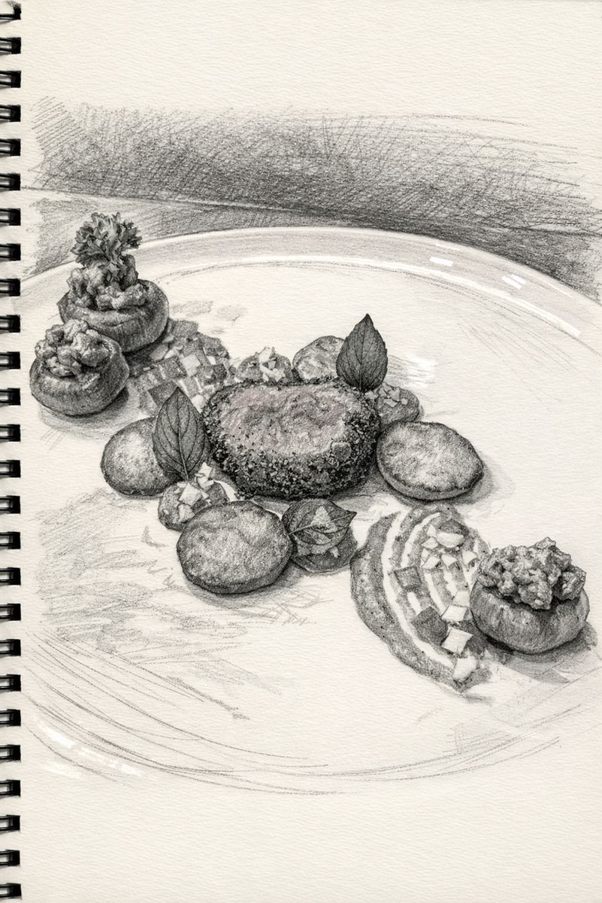
Veal Tenderloin
Part IIngredients
- 400 gveal tenderloin
- 1 gthyme and rosemary
- 20 gbutter
- 10 gclarified butter
Method
- Trim the tenderloin evenly, tie and season.
- Pat dry and pan sear.
- Baste with butter, rosemary and thyme.
- Finish in the oven at 190°C until it reaches a core temperature of 49°C.
- Rest.
- Brush with clarified butter, coat with Provençale powder, carve and serve.
Provençale Powder
Part IIIngredients
- 20 gbreadcrumbs, toasted
- 5 geach basil, parsley, rosemary, tarragon, thyme, marjoram
- 1pinch dried lavender
Method
- Toast the breadcrumbs until golden brown.
- Chop the herbs.
- Blend everything finely, then strain.
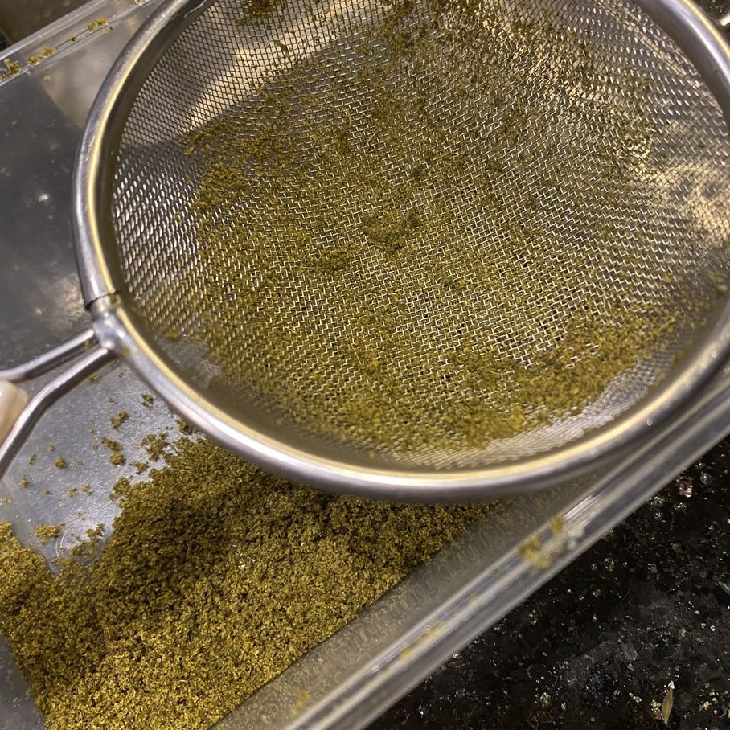
Veal Jus
Part IIIIngredients
- 200 gveal trimmings
- 30 gonion
- 30 gcelery
- 30 gshallot
- 200 gveal stock
- 30 gbutter
- 30 gwhite wine
- lavender and basil
- 1 pcbouquet garni
Method
- Cook the veal trimmings until brown.
- Sweat the mirepoix.
- Deglaze with white wine.
- Add back the trimmings, stock and bouquet garni, then reduce slowly.
- Strain through a fine cloth.
- Infuse briefly with basil and lavender, then strain.
- Mount with butter.
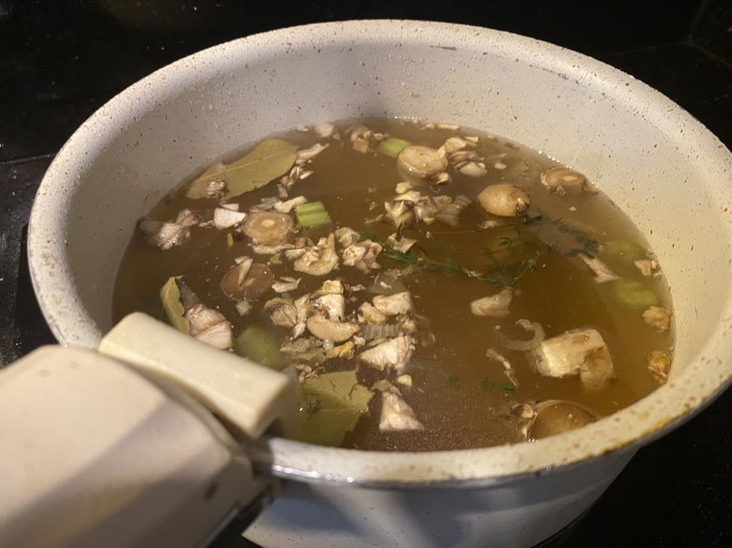
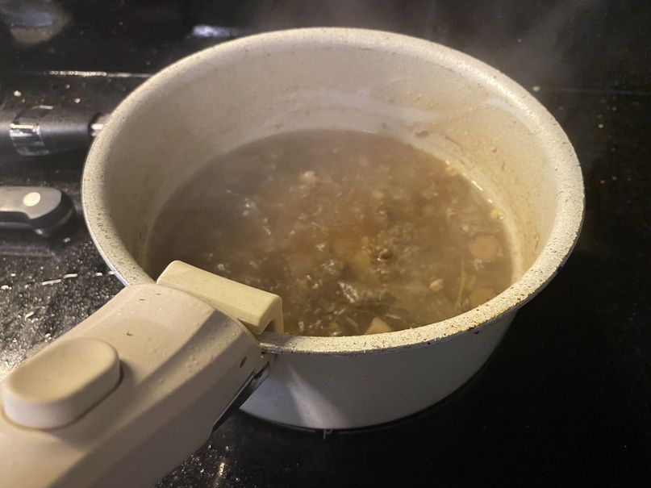
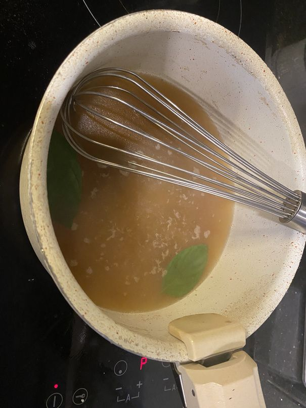
Pommes Soufflées
Part IVIngredients
- 400 gpotato
- 30 gpotato starch
- 40 gegg white
- 300 goil
- 5 gclarified butter
Method
- Slice the potatoes 1 mm thick on a mandoline and pat dry.
- Brush one disc with egg white and another with potato starch, sandwich the two together, brush the outside with clarified butter, then chill.
- Deep fry at 140°C until puffed and light golden, then fry briefly at 190°C.
- Season.
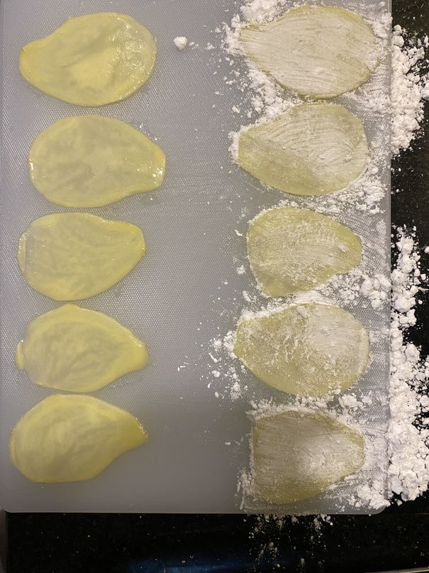
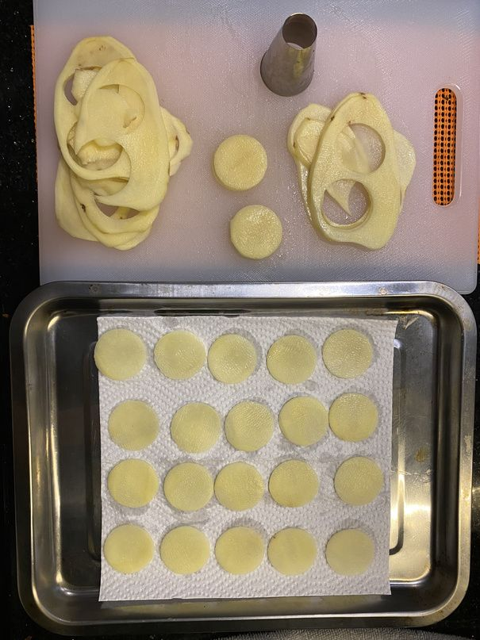
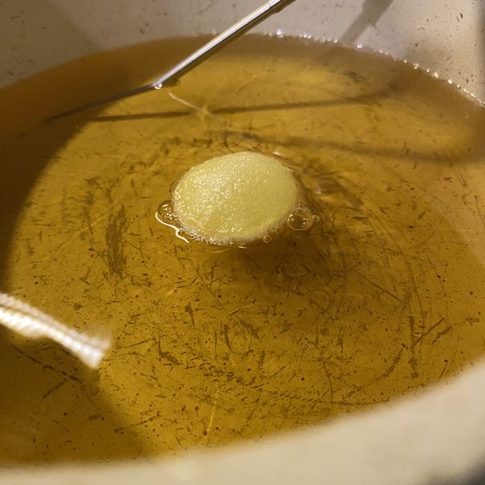
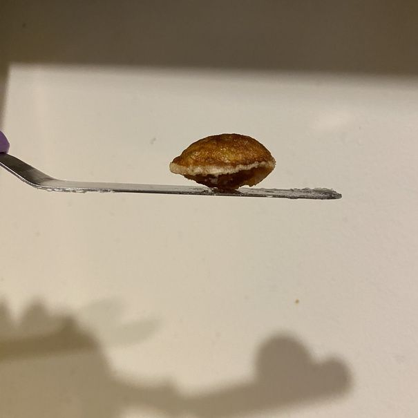
Romesco
Part VIngredients
- 2red bell peppers
- 300 gtomatoes
- 50 ggarlic
- 10 gwhite wine vinegar
- 60 galmonds
- 5 gbread
- 5 gespelette
- 10 golive oil
Method
- Roast the peppers, tomatoes and garlic at 230°C.
- Take the garlic out after 15 minutes; roast the peppers for 30 minutes, turning halfway.
- Toast the almonds.
- Peel the garlic and peppers.
- Blend the ingredients.
- Pass through a chinois.
- Garnish with toasted almonds and pickled bell pepper.
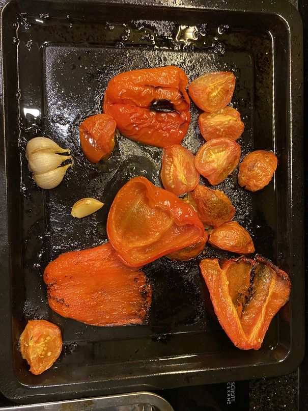
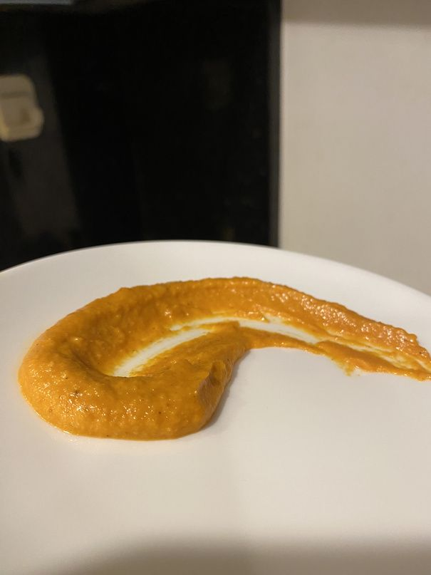
Pickled Bell Peppers
Part VIIngredients
- 1 pcbell pepper
- 30 gshallot
- 100 gwater
- 100 gwhite wine vinegar
- 1garlic clove
- 1 geach thyme, rosemary, bay leaf
Method
- Make the pickling solution: boil the water, vinegar and salt, then cool.
- Roast the shallots (15 minutes) and bell pepper (30 minutes) at 230°C.
- Assemble in a jar: sliced peppers, whole shallots, sliced garlic, pickling solution and herbs.
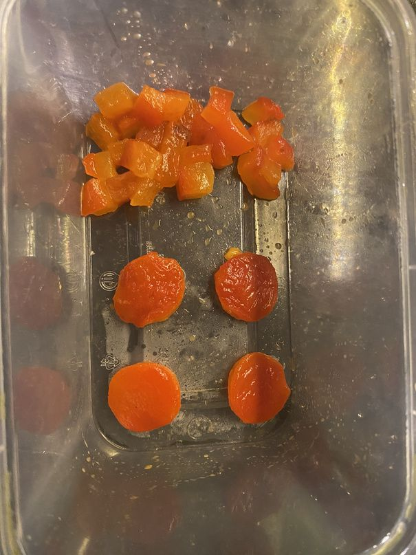
Stuffed Mushroom
Part VIIIngredients
- 50 gonion
- 40 gshallot
- 200 gminced veal trimmings
- 400 gtomato
- 20 gtomato paste
- 10 ggarlic
- 1 geach parsley, rosemary, thyme, basil, tarragon, chopped
- 50 gveal stock
- 10 golive oil
Method
- For the bolognese stuffing, brown the mince and strain.
- Sweat and caramelize the onion, then sweat the minced garlic.
- Peel the tomatoes (collect the juice), chop, cook with the onion, blend and pass.
- Add the veal mince.
- Add the tomato sauce and tomato paste.
- Add the veal stock, simmer, and cover with a cartouche.
- Add the herbs.
- Add the tomato juice and warm through.
- Scoop out and hollow the base of the mushrooms, then braise in veal jus.
- Fill the mushrooms with the bolognese.
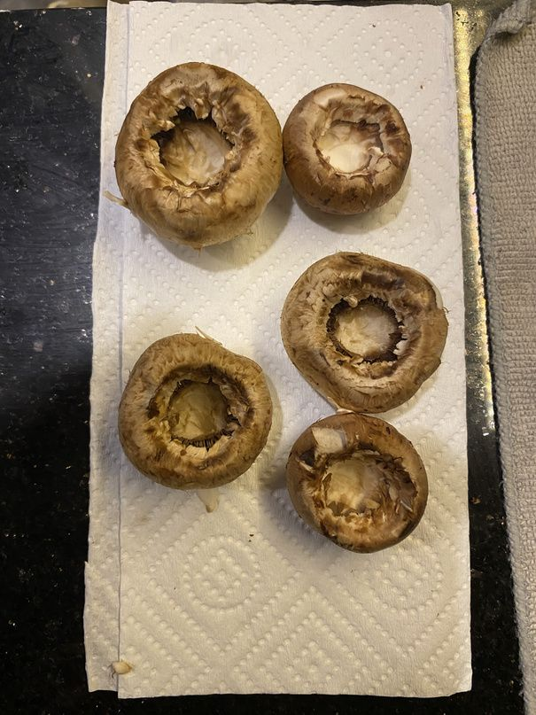
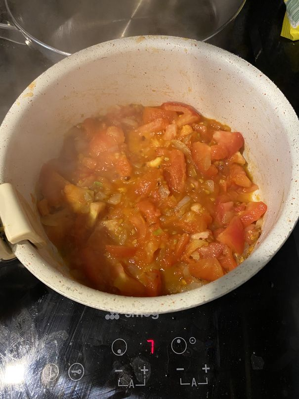
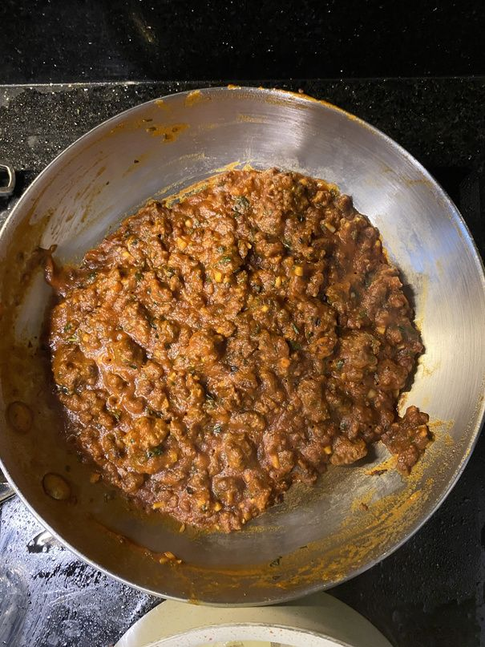
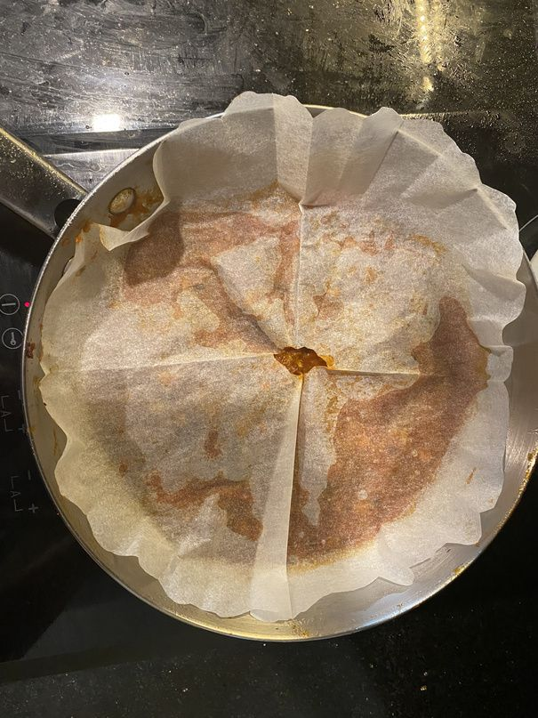
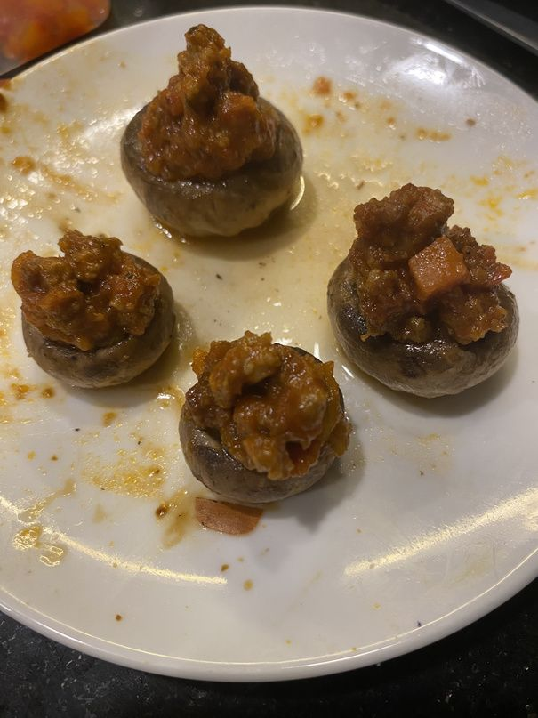
Basil Crisp
Part VIIIIngredients
- 1 gbasil
- 1 golive oil
Method
- Cover a plate with cling film.
- Dip picked basil leaves in olive oil, then lay them on the plate.
- Microwave on high for 4 minutes, or until crisp.
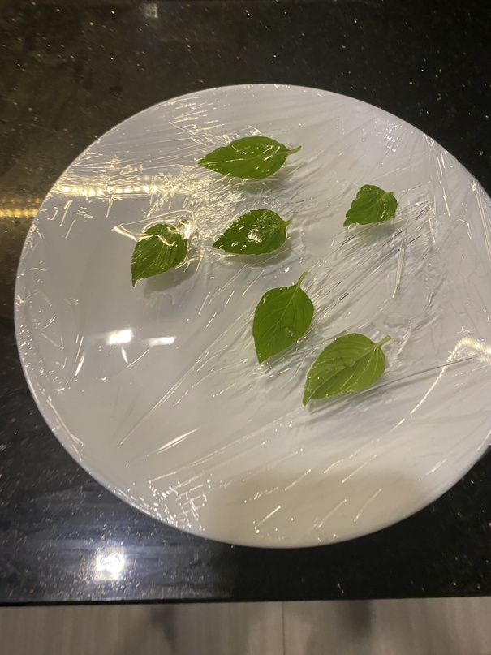
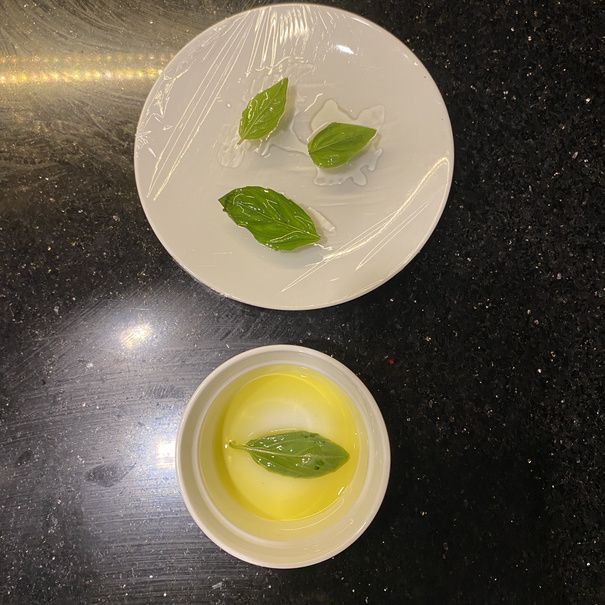

The full book
Download the PDF
Both recipes as designed, with every step photo, illustration and the full costing. 24 pages, about 9 MB.
Download PDF